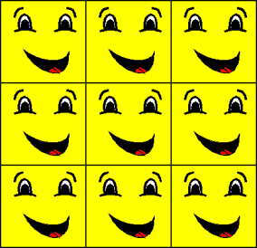

The wrap texture address mode, identified by the D3DTADDRESS_WRAP member of the D3DTEXTUREADDRESS enumerated type, makes Direct3D repeat the texture on every integer junction. Suppose, for example, your application creates a square primitive and specifies texture coordinates of (0.0,0.0), (0.0,3.0), (3.0,3.0), and (3.0,0.0). Setting the texture addressing mode to D3DTADDRESS_WRAP results in the texture being applied three times in both the u-and v-directions, as shown in the following illustration.

The effects of this texture address mode are similar to, but distinct from, those of the mirror mode. For more information, see Mirror Texture Address Mode (Direct3D 9).
Â
Â